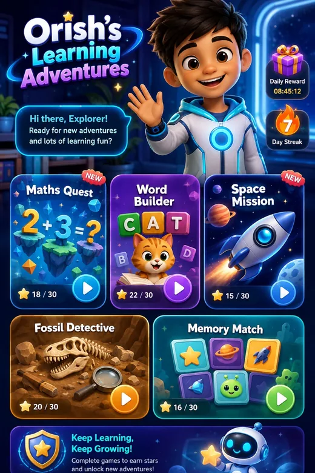

ORISH'S WORLD @ THE CODE
Explore. Learn.
Play. Grow.
A family learning world from birth to 16, guided by Orish through games, science, creativity, routines, cooking, stories and real-life missions.
✓ No ads✓ No trackers✓ No paid AI

Hi! I'm Orish. Pick an adventure and I'll grow it with you.
20+connected learning pathways
ORISH’S WORLD • LIVE PARTNER WALKTHROUGH
See the prototype move, respond and teach.

01WHY IT EXISTS
A six-year-old asked for a learning game that is actually fun.
Orish’s World begins with play, curiosity and movement — then grows with the child into science, evidence, technology and real-world problem solving.
ORISH
Tap the glowing points. This is a guided doorway into the real prototype, not a slide deck.
● No advertising
● No trackers
● No unrestricted child social
● No arbitrary AI-generated code
● Future AI keys server-side
YOUR WORLD
What shall we do?
Playing asExplorerLocal demo profile
MY EXPLORER
Explorer Explorer outfit • ready to learnTODAY WITH ORISH
Your adventure board
ORISH WORLD MAP
Choose a district
Everything is connected. Pick a district or show the whole world.
FEATURED JOURNEYS
Jump straight into an adventure
ORISH PREVIEW
Choose an area
Every area becomes more advanced as the child grows.
MY AVATAR LAB
Create your explorer
Private on this deviceLoading local 3D model…
ATC
↔ Swipe or drag to spin 360°
V1.24 keeps the original local GLB character on-device and adds lightweight living motion and poses through the AT THE CODE WebGL viewer. No photo, camera, face scan, upload or externally branded character service is required. The earlier renderer remains as a safe fallback if 3D is unavailable.
Skin colour
Choose a real-world tone or switch to Creative Me for fantasy colours.
Hair
Pick a style and colour. More styles can be added as 3D assets are created.
Outfit
Explorer, science, cooking, art and space looks.
Accent colour
Choose the glow and trim colour for your outfit.
Your changes are not saved yet.Only the avatar choices are stored locally for the active profile.
TALK TO ORISH
Your talking guide
O
Free prototype voice is ready
🧠 Local Orish Intelligence
Routes ideas into approved learning engines
AT THE CODE OPEN VOICETalk naturally to Orish
Parent opt-in
Two-way microphone is off until a grown-up enables it in Parent Studio.
The microphone starts only after a tap, stops after the turn, and raw audio is not saved by the app. The production route is designed for our own reviewed self-hosted voice gateway.
What shall we explore? I can make a game, quiz, story or mission.
This prototype runs locally and does not send the message to an AI service. Orish selects only from approved game/activity engines; it never executes generated child-supplied code.
How this £0 version thinks
It checks the child’s age band, the words in the request and optional locally saved interests, then recommends the safest matching learning engine. Private Parent Studio wording is never shown here.
ORISH GAME MAKER
A game made from your idea
🚀Space Signal Sort
0 / 4
Growing ExplorerExplorer
The activity adapts to the active age profile.
Tap the best answer.
SCIENCE WORLD
Choose an investigation
🔬
Science at your level
Every investigation changes with the active age profile.
Core science games
Space and human-body missions use the reusable question engine.
Are We Alone?
Investigate extraterrestrial-life claims without confusing possibility, testimony, UAP and proof.
Science expeditions
Fossils, weather, caves/minerals, oceans, plants and experiment design.
Mysteries & unexplained
Explore fascinating claims without treating rumours as facts. Older explorers compare sources, alternative explanations and uncertainty.
SCIENCE WORLD • EVIDENCE SPECIAL
Are We Alone?
Evidence Explorer
Wonder boldly. Claim carefully.
Scientists are genuinely searching for life beyond Earth. This mission separates possibility, claims, unresolved observations and confirmed evidence.
🪐 Exoplanets: confirmed🔭 Search for life: active🛰️ UAP: some unresolved👽 Alien contact: not confirmed
CASE 1
What do we actually know?
Follow the evidence.
Evidence console
Each light is a fact or limitation to use before choosing.
MAKE THE BEST-SUPPORTED CONCLUSION
Question
Source trail
Children stay inside the app. These source records show what the approved lesson was checked against.
Science can update. If independently verified evidence changes, this lesson should change with it.
SCIENCE EXPEDITION
Choose a case
🔬
Explorer
Investigation
Follow the evidence.
Evidence pack
Investigation steps
EVIDENCE CHECK
Question
AI EVIDENCE DETECTIVE
Use AI like an investigator
AI can help you ask better questions — it is not automatic proof.
Check important claims with suitable sources and observations.
Claim → Check → Source
Evidence question
Investigation Notebook
Practise documenting an investigation. These notes and drawings stay on this screen and are not automatically stored.
Draw a diagram / evidence sketch
Use labels, arrows, measurements or a simple map. The canvas is not uploaded.
GLOBAL HISTORY, CULTURE & CHANGEMAKERS
History is bigger than the usual list
●●●●WORLD
HISTORY
HISTORY
History Explorer
Real journeys. Real context. Checkable sources.
Explore history through people, evidence, culture and change.
Black history all yearNo stereotypesSource trailKnown / disputed / uncertain
🌍
INVESTIGATE THE JOURNEY
Choose a changemaker
Black history stays available all year and includes overlooked people as well as familiar names.
Choose a journey to see context, impact and evidence.
SOURCE TRAIL
Where did this claim come from?
Child mode does not open the web. Source organisations are shown so older learners and grown-ups can see that the story is traceable rather than invented.
REAL-WORLD MISSIONS
Money, rights & smart choices
Practise real-world thinking through games.
Money examples are educational. Law examples teach reasoning and are not personalised legal advice.
💷
Growing decision-maker
Choose a mission
Question
EXPLORER PROGRESS
Stars, badges & discoveries
Stars are encouragement, not money. They cannot be bought, cashed out or used to pressure a child into behaviour. Replaying is welcome, but the same activity earns stars only once per day.
Badges
Unlocked by exploring and learning across the world.
Explorer items
Local cosmetic milestones only — there is no shop.
Recent discoveries
A simple local activity history for this profile.
MISSION HQ
Your missions
Ready missions
Parent-created missions appear here using child-safe wording only.
No missions waiting yet.
ORISH MISSION
Choose a mission
A mission created in Parent Studio will appear here without revealing the adult's private wording.
HOME & ROUTINES
Build your rhythm
Morning Launch
Turn getting ready into a calm launch sequence.
Night Landing
Slow the world down with a predictable bedtime sequence.
CURRENT ROUTINE
Choose morning or bedtime
Your grown-up can customise the steps privately in Parent Studio.
KITCHEN LAB
What can we make?
Kitchen safety: heat, knives and hot equipment stay grown-up jobs. Allergy information must be checked by the adult supervising the real activity.
No-scales measurements are practical approximations. For baking, use level spoons/cups and let the supervising adult check dough or batter texture.
Ready with what you have
Recipes only become ready when the saved ingredients and equipment match.
A grown-up needs to set up the kitchen list in Parent Studio first.
Almost there
These need only one or two missing items/equipment.
COOK WITH ORISH
Choose a recipe
Measurements and child/adult roles will appear here.
ONE-STEP COOK MODE
Recipe
TOGETHER
Choose a recipe and start Cook Mode.
No timer for this step
MAKE WITH ORISH
Build it for real
🛠️
Maker mode
Projects adapt to the active age profile.
Off-screen by design: choose a project here, then put the device down while you build and test it. No photo upload is required.
Choose a project
Paper engineering, geometry, forces and story-making using ordinary household materials.
ORISH MAKER LAB
Choose a project
The investigation question and steps will appear here.
Materials
What you are learning
Build & test
CREATIVE STUDIO
Design, invent & explain
🎨Creative challenge
The brief becomes more sophisticated with age.
Creative work stays offline in this prototype. Orish records only that a learning challenge was completed — not the child’s drawing, handwriting or personal story content.
Creative briefs
Pick a challenge, make it on paper or with safe materials, then return to mark the learning complete.
DESIGN BRIEF
Choose a challenge
Your age-adapted design brief will appear here.
Learning goal
Privacy rule
Keep real addresses, schools, full names and other private information out of shareable creative work.
FAMILY CLUBHOUSE
Play & learn together
🏠Family team mode
Approved family only
Activities adapt to the active child profile while keeping everyone on one cooperative team.
No public social features: Family Clubhouse is for people already together or approved by the parent/guardian. No public profiles, stranger matching, private child messaging, location sharing or family recordings are required.
Who is joining?
Choose a role only. Names are not required or stored.
Choose a family challenge
Cooperative quizzes, safe hunts, science, cooking, stories and building.
ORISH FAMILY MISSION
Choose a challenge
Your shared family activity will appear here.
Learning goal
Clubhouse rule
Help each other. No one is ranked, shamed or forced to answer, eat, perform or share private experiences.
Question 1
Do it together
VISUAL GAME ENGINE
Sort the signals
🪐
Visual Sort Lab
0 / 0
Tap or drag each card into the correct zone.
ACCESSIBILITY CENTRE
Make the world work for you
⚙️
Change how Orish's World feels on this device.
No diagnosis or explanation is needed. These controls change presentation only and do not lower the learning goal.
Built-in alternatives: Memory Lab has no countdown, Observation Lab uses keyboard-focusable tap targets, text labels support visual symbols, and core games do not require drag-only controls.
MEMORY + MATCHING ENGINE
Memory Lab
🧠
Memory Lab
0 / 0 pairs
Turn over two cards and find the pairs.
0 turns
Take your time. There is no timer.
OBSERVATION + EVIDENCE ENGINE
Observation Lab
Look carefully, not quickly. There is no countdown, camera access, upload, leaderboard or facial recognition. The game uses built-in scenes only.
🔎
Observation Lab
0 / 0
Look carefully and find the evidence.
Take your time and look for evidence.
MATHS LAB
Numbers become missions
No speed race. Maths Lab rewards careful reasoning, trying again and using hints. The prototype stores results, not a transcript of working or typed answers.
📐
Maths Lab
Age adaptive
Choose an age profile to begin.
1 / 1
SEQUENCING + LOGIC ENGINE
Logic Lab
Think it through, not against the clock. There is no countdown, leaderboard or drag-only control. Every step can be moved with accessible up/down buttons.
🧭
Logic Lab
Planning
Put the steps into an order that makes sense.
Move the steps until the plan makes sense.
READING + SPELLING + KEYBOARD ENGINE
Reading & Keyboard Lab
Accuracy before speed. There is no typing race, public score or saved free-text response. Typed practice stays transient in this screen; the Learning Passport records only completion, accuracy and support level.
⌨️
Reading & Keyboard Lab
1 / 4
Read, spell and type at the active age level.
Take your time. Accuracy matters more than speed.
No timer. Read carefully and use the keyboard only when it helps.
INTERACTIVE STORY + CHOICE ENGINE
Story & Choice Lab
Choices are for learning, not judging. There is no behaviour score, personality label, timer or public result. A mistake can open a repair path. The Learning Passport records completion only — not the exact choices a child made.
📖
Story & Choice Lab
Scene 1
Choose what happens next and notice the consequences.
Take your time. See what each decision changes.
GOOD NEWS BEACON
Hopeful ideas, carefully presented
Demo content only: these are manually written sample cards, not live/current news reports. No feed, browser tracking, ads or frightening breaking-news alerts are used.
🌍
Growing Explorer
Look for the problem people noticed, what they tried and what changed.
Beacon cards
Choose a positive example to explore.
Choose a Beacon card.
ADULT ACCESS
Parent Gate
🔐
Create an adult PIN
This local PIN helps stop a child casually opening Parent Studio. It is not a replacement for production account authentication.
The PIN itself is never stored. On HTTPS/localhost, the browser stores only a salted PBKDF2 verification value.
PRIVATE ADULT AREA
Parent Studio
Prototype safety: profiles and learning records stay in this browser only. Use fictional/demo information until a production backend and formal security review exist.
No active child profileParent Studio session unlocked
CENTRAL SAFETY SETTINGS
Safety & Parent Controls Centre
One place to decide which child-facing features are available for the active profile. These prototype controls stay on this device.
Create or select a child profile before changing profile-specific safety controls.
Future online capabilities — locked OFF in this £0 prototype
These cannot be switched on from the browser build. A production version would require a reviewed server-side safety gateway and explicit parent controls.
🔒 Unreviewed live generative AI🔒 Open web search🔒 Public social features🔒 Location access🔒 Child camera/uploads
V1 RELEASE READINESS
App & device readiness
Checks this browser/device without analytics or sending device details anywhere.
ConnectionChecking…
App modeBrowser tab
Offline shellChecking…
Data modelLocal prototype
Install availability depends on the browser. On iPhone/iPad Safari, use Share → Add to Home Screen.
Before real child data: complete physical-device QA, production authentication/backend work, formal privacy/safeguarding review and security testing. This local PIN/browser-storage prototype is not production child-data security.
Privacy & data dashboard
Shows counts and storage boundaries without displaying private Parent Studio wording.
Select a profile to view its local-data summary.
✓ No saved Orish transcript store✓ No raw voice store✓ No location store✓ No camera/photo store required
Child profile
Only collect what Orish genuinely needs.
Family profiles
Switch which child Orish adapts to.
No profiles yet.
Private back channel
Tell Orish what you want the active child to practise. The child-facing version never quotes this private wording.
Morning & bedtime routines
One step per line. Keep routines positive and realistic.
Kitchen setup
Enter only ingredients and equipment actually available at home.
Curriculum engine
Hidden mapping behind each activity.
No active profile yet
Create a profile to see its framework and age-adaptive objectives.
Generated activity preview
Local template engine only — no AI service called.
Create a profile and add a private goal. Orish will turn it into a child-facing activity without revealing the private wording.
Parent Learning Summary
A compact overview generated only from Learning Passport records — never from private conversations.
Create or select a child profile to see a learning summary.
Learning Passport
Completed V1 games automatically create local evidence for the active profile when enabled.
No learning evidence yet.
Local privacy controls
Delete this prototype’s local profiles, adult PIN, parent requests and evidence from this browser.